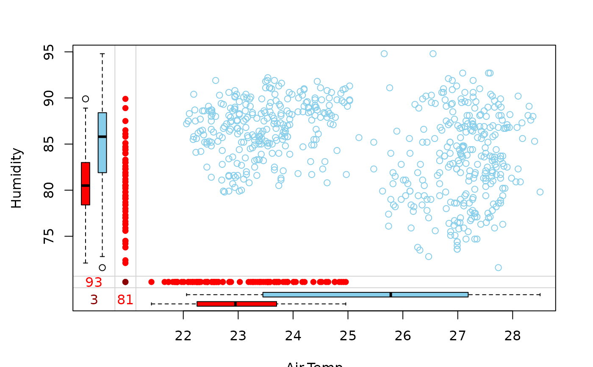
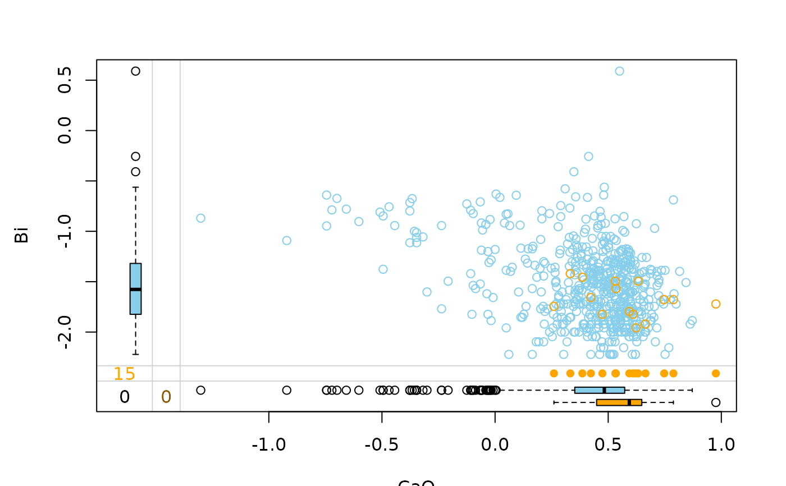

In addition to a standard scatterplot, information about missing/imputed values is shown in the plot margins. Furthermore, imputed values are highlighted in the scatterplot.
marginplot( x, delimiter = NULL, col = c("skyblue", "red", "red4", "orange", "orange4"), alpha = NULL, pch = c(1, 16), cex = par("cex"), numbers = TRUE, cex.numbers = par("cex"), zeros = FALSE, xlim = NULL, ylim = NULL, main = NULL, sub = NULL, xlab = NULL, ylab = NULL, ann = par("ann"), axes = TRUE, frame.plot = axes, ... )
| x | a |
|---|---|
| delimiter | a character-vector to distinguish between variables and
imputation-indices for imputed variables (therefore, |
| col | a vector of length five giving the colors to be used in the plot. The first color is used for the scatterplot and the boxplots for the available data. In case of missing values, the second color is taken for the univariate scatterplots and boxplots for missing values in one variable and the third for the frequency of missing/imputed values in both variables (see ‘Details’). Otherwise, in case of imputed values, the fourth color is used for the highlighting, the frequency, the univariate scatterplot and the boxplots of mputed values in the first variable and the fifth color for the same applied to the second variable. A black color is used for the highlighting and the frequency of imputed values in both variables instead. If only one color is supplied, it is used for the bivariate and univariate scatterplots and the boxplots for missing/imputed values in one variable, whereas the boxplots for the available data are transparent. Else if two colors are supplied, the second one is recycled. |
| alpha | a numeric value between 0 and 1 giving the level of
transparency of the colors, or |
| pch | a vector of length two giving the plot symbols to be used for the scatterplot and the univariate scatterplots. If a single plot character is supplied, it is used for the scatterplot and the default value will be used for the univariate scatterplots (see ‘Details’). |
| cex | the character expansion factor to be used for the bivariate and univariate scatterplots. |
| numbers | a logical indicating whether the frequencies of missing/imputed values should be displayed in the lower left of the plot (see ‘Details’). |
| cex.numbers | the character expansion factor to be used for the frequencies of the missing/imputed values. |
| zeros | a logical vector of length two indicating whether the variables
are semi-continuous, i.e., contain a considerable amount of zeros. If
|
| xlim, ylim | axis limits. |
| main, sub | main and sub title. |
| xlab, ylab | axis labels. |
| ann | a logical indicating whether plot annotation ( |
| axes | a logical indicating whether both axes should be drawn on the
plot. Use graphical parameter |
| frame.plot | a logical indicating whether a box should be drawn around the plot. |
| ... | further graphical parameters to be passed down (see
|
Boxplots for available and missing/imputed data, as well as univariate scatterplots for missing/imputed values in one variable are shown in the plot margins.
Imputed values in either of the variables are highlighted in the scatterplot.
Furthermore, the frequencies of the missing/imputed values can be displayed by a number (lower left of the plot). The number in the lower left corner is the number of observations that are missing/imputed in both variables.
Some of the argument names and positions have changed with versions
1.3 and 1.4 due to extended functionality and for more consistency with
other plot functions in VIM. For back compatibility, the argument
cex.text can still be supplied to ...{} and is handled
correctly. Nevertheless, it is deprecated and no longer documented. Use
cex.numbers instead.
M. Templ, A. Alfons, P. Filzmoser (2012) Exploring incomplete data using visualization tools. Journal of Advances in Data Analysis and Classification, Online first. DOI: 10.1007/s11634-011-0102-y.
scattMiss()
Other plotting functions:
aggr(),
barMiss(),
histMiss(),
marginmatrix(),
matrixplot(),
mosaicMiss(),
pairsVIM(),
parcoordMiss(),
pbox(),
scattJitt(),
scattMiss(),
scattmatrixMiss(),
spineMiss()
Andreas Alfons, Matthias Templ, modifications by Bernd Prantner
data(tao, package = "VIM") data(chorizonDL, package = "VIM") ## for missing values marginplot(tao[,c("Air.Temp", "Humidity")])